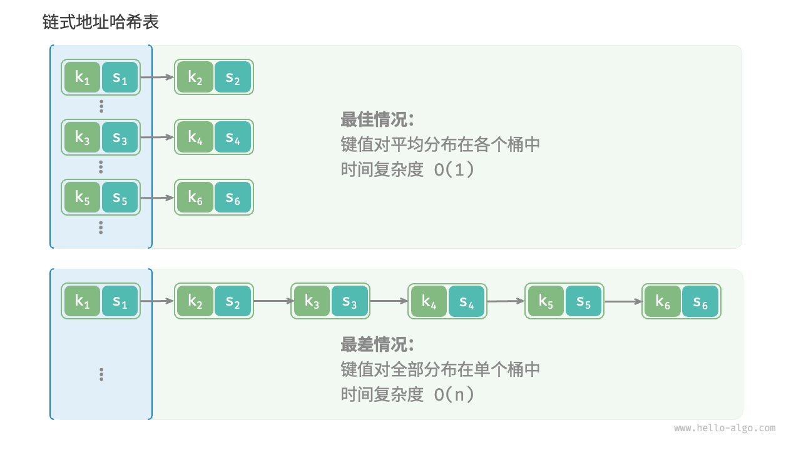

哈希算法
前两节介绍了哈希表的工作原理和哈希冲突的处理方法。然而无论是开放寻址还是链式地址，它们只能保证哈希表可以在发生冲突时正常工作，而无法减少哈希冲突的发生。
如果哈希冲突过于频繁，哈希表的性能则会急剧劣化。如下图所示，对于链式地址哈希表，理想情况下键值对均匀分布在各个桶中，达到最佳查询效率；最差情况下所有键值对都存储到同一个桶中，时间复杂度退化至 $O(n)$ 。

键值对的分布情况由哈希函数决定。回忆哈希函数的计算步骤，先计算哈希值，再对数组长度取模：
index = hash(key) % capacity
观察以上公式，当哈希表容量 capacity 固定时，哈希算法 hash() 决定了输出值，进而决定了键值对在哈希表中的分布情况。
这意味着，为了降低哈希冲突的发生概率，我们应当将注意力集中在哈希算法 hash() 的设计上。
哈希算法的目标
为了实现“既快又稳”的哈希表数据结构，哈希算法应具备以下特点。
- 确定性：对于相同的输入，哈希算法应始终产生相同的输出。这样才能确保哈希表是可靠的。
- 效率高：计算哈希值的过程应该足够快。计算开销越小，哈希表的实用性越高。
- 均匀分布：哈希算法应使得键值对均匀分布在哈希表中。分布越均匀，哈希冲突的概率就越低。
实际上，哈希算法除了可以用于实现哈希表，还广泛应用于其他领域中。
- 密码存储：为了保护用户密码的安全，系统通常不会直接存储用户的明文密码，而是存储密码的哈希值。当用户输入密码时，系统会对输入的密码计算哈希值，然后与存储的哈希值进行比较。如果两者匹配，那么密码就被视为正确。
- 数据完整性检查：数据发送方可以计算数据的哈希值并将其一同发送；接收方可以重新计算接收到的数据的哈希值，并与接收到的哈希值进行比较。如果两者匹配，那么数据就被视为完整。
对于密码学的相关应用，为了防止从哈希值推导出原始密码等逆向工程，哈希算法需要具备更高等级的安全特性。
- 单向性：无法通过哈希值反推出关于输入数据的任何信息。
- 抗碰撞性：应当极难找到两个不同的输入，使得它们的哈希值相同。
- 雪崩效应：输入的微小变化应当导致输出的显著且不可预测的变化。
请注意，“均匀分布”与“抗碰撞性”是两个独立的概念，满足均匀分布不一定满足抗碰撞性。例如，在随机输入 key 下，哈希函数 key % 100 可以产生均匀分布的输出。然而该哈希算法过于简单，所有后两位相等的 key 的输出都相同，因此我们可以很容易地从哈希值反推出可用的 key ，从而破解密码。
哈希算法的设计
哈希算法的设计是一个需要考虑许多因素的复杂问题。然而对于某些要求不高的场景，我们也能设计一些简单的哈希算法。
- 加法哈希：对输入的每个字符的 ASCII 码进行相加，将得到的总和作为哈希值。
- 乘法哈希：利用乘法的不相关性，每轮乘以一个常数，将各个字符的 ASCII 码累积到哈希值中。
- 异或哈希：将输入数据的每个元素通过异或操作累积到一个哈希值中。
旋转哈希：将每个字符的 ASCII 码累积到一个哈希值中，每次累积之前都会对哈希值进行旋转操作。
"Python" ```python def add_hash(key: str) -> int: """加法哈希""" hash = 0 modulus = 1000000007 for c in key:
hash += ord(c)return hash % modulus
def mul_hash(key: str) -> int: """乘法哈希""" hash = 0 modulus = 1000000007 for c in key: hash = 31 * hash + ord(c) return hash % modulus
def xor_hash(key: str) -> int: """异或哈希""" hash = 0 modulus = 1000000007 for c in key: hash ^= ord(c) return hash % modulus
def rot_hash(key: str) -> int: """旋转哈希""" hash = 0 modulus = 1000000007 for c in key: hash = (hash << 4) ^ (hash >> 28) ^ ord(c) return hash % modulus
- "C++"
```cpp
/* 加法哈希 */
int addHash(string key) {
long long hash = 0;
const int MODULUS = 1000000007;
for (unsigned char c : key) {
hash = (hash + (int)c) % MODULUS;
}
return (int)hash;
}
/* 乘法哈希 */
int mulHash(string key) {
long long hash = 0;
const int MODULUS = 1000000007;
for (unsigned char c : key) {
hash = (31 * hash + (int)c) % MODULUS;
}
return (int)hash;
}
/* 异或哈希 */
int xorHash(string key) {
int hash = 0;
const int MODULUS = 1000000007;
for (unsigned char c : key) {
hash ^= (int)c;
}
return hash & MODULUS;
}
/* 旋转哈希 */
int rotHash(string key) {
long long hash = 0;
const int MODULUS = 1000000007;
for (unsigned char c : key) {
hash = ((hash << 4) ^ (hash >> 28) ^ (int)c) % MODULUS;
}
return (int)hash;
}
- "Java"
```java
/ 加法哈希 /
int addHash(String key) {
long hash = 0;
final int MODULUS = 1000000007;
for (char c : key.toCharArray()) {
} return (int) hash; }hash = (hash + (int) c) % MODULUS;
/ 乘法哈希 / int mulHash(String key) { long hash = 0; final int MODULUS = 1000000007; for (char c : key.toCharArray()) { hash = (31 * hash + (int) c) % MODULUS; } return (int) hash; }
/ 异或哈希 / int xorHash(String key) { int hash = 0; final int MODULUS = 1000000007; for (char c : key.toCharArray()) { hash ^= (int) c; } return hash & MODULUS; }
/ 旋转哈希 / int rotHash(String key) { long hash = 0; final int MODULUS = 1000000007; for (char c : key.toCharArray()) { hash = ((hash << 4) ^ (hash >> 28) ^ (int) c) % MODULUS; } return (int) hash; }
观察发现，每种哈希算法的最后一步都是对大质数 $1000000007$ 取模，以确保哈希值在合适的范围内。值得思考的是，为什么要强调对质数取模，或者说对合数取模的弊端是什么？这是一个有趣的问题。
先抛出结论：**使用大质数作为模数，可以最大化地保证哈希值的均匀分布**。因为质数不与其他数字存在公约数，可以减少因取模操作而产生的周期性模式，从而避免哈希冲突。
举个例子，假设我们选择合数 $9$ 作为模数，它可以被 $3$ 整除，那么所有可以被 $3$ 整除的 `key` 都会被映射到 $0$、$3$、$6$ 这三个哈希值。
$$
\begin{aligned}
\text{modulus} & = 9 \newline
\text{key} & = \{ 0, 3, 6, 9, 12, 15, 18, 21, 24, 27, 30, 33, \dots \} \newline
\text{hash} & = \{ 0, 3, 6, 0, 3, 6, 0, 3, 6, 0, 3, 6,\dots \}
\end{aligned}
$$
如果输入 `key` 恰好满足这种等差数列的数据分布，那么哈希值就会出现聚堆，从而加重哈希冲突。现在，假设将 `modulus` 替换为质数 $13$ ，由于 `key` 和 `modulus` 之间不存在公约数，因此输出的哈希值的均匀性会明显提升。
$$
\begin{aligned}
\text{modulus} & = 13 \newline
\text{key} & = \{ 0, 3, 6, 9, 12, 15, 18, 21, 24, 27, 30, 33, \dots \} \newline
\text{hash} & = \{ 0, 3, 6, 9, 12, 2, 5, 8, 11, 1, 4, 7, \dots \}
\end{aligned}
$$
值得说明的是，如果能够保证 `key` 是随机均匀分布的，那么选择质数或者合数作为模数都可以，它们都能输出均匀分布的哈希值。而当 `key` 的分布存在某种周期性时，对合数取模更容易出现聚集现象。
总而言之，我们通常选取质数作为模数，并且这个质数最好足够大，以尽可能消除周期性模式，提升哈希算法的稳健性。
## 常见哈希算法
不难发现，以上介绍的简单哈希算法都比较“脆弱”，远远没有达到哈希算法的设计目标。例如，由于加法和异或满足交换律，因此加法哈希和异或哈希无法区分内容相同但顺序不同的字符串，这可能会加剧哈希冲突，并引起一些安全问题。
在实际中，我们通常会用一些标准哈希算法，例如 MD5、SHA-1、SHA-2 和 SHA-3 等。它们可以将任意长度的输入数据映射到恒定长度的哈希值。
近一个世纪以来，哈希算法处在不断升级与优化的过程中。一部分研究人员努力提升哈希算法的性能，另一部分研究人员和黑客则致力于寻找哈希算法的安全性问题。下表展示了在实际应用中常见的哈希算法。
- MD5 和 SHA-1 已多次被成功攻击，因此它们被各类安全应用弃用。
- SHA-2 系列中的 SHA-256 是最安全的哈希算法之一，仍未出现成功的攻击案例，因此常用在各类安全应用与协议中。
- SHA-3 相较 SHA-2 的实现开销更低、计算效率更高，但目前使用覆盖度不如 SHA-2 系列。
<p align="center"> 表 <id> 常见的哈希算法 </p>
| | MD5 | SHA-1 | SHA-2 | SHA-3 |
| -------- | ------------------------------ | ---------------- | ---------------------------- | ------------------- |
| 推出时间 | 1992 | 1995 | 2002 | 2008 |
| 输出长度 | 128 bit | 160 bit | 256/512 bit | 224/256/384/512 bit |
| 哈希冲突 | 较多 | 较多 | 很少 | 很少 |
| 安全等级 | 低，已被成功攻击 | 低，已被成功攻击 | 高 | 高 |
| 应用 | 已被弃用，仍用于数据完整性检查 | 已被弃用 | 加密货币交易验证、数字签名等 | 可用于替代 SHA-2 |
## 数据结构的哈希值
我们知道，哈希表的 `key` 可以是整数、小数或字符串等数据类型。编程语言通常会为这些数据类型提供内置的哈希算法，用于计算哈希表中的桶索引。以 Python 为例，我们可以调用 `hash()` 函数来计算各种数据类型的哈希值。
- 整数和布尔量的哈希值就是其本身。
- 浮点数和字符串的哈希值计算较为复杂，有兴趣的读者请自行学习。
- 元组的哈希值是对其中每一个元素进行哈希，然后将这些哈希值组合起来，得到单一的哈希值。
- 对象的哈希值基于其内存地址生成。通过重写对象的哈希方法，可实现基于内容生成哈希值。
!!! tip
请注意，不同编程语言的内置哈希值计算函数的定义和方法不同。
- "Python"
```python title="built_in_hash.py"
num = 3
hash_num = hash(num)
// 整数 3 的哈希值为 3
bol = True
hash_bol = hash(bol)
// 布尔量 True 的哈希值为 1
dec = 3.14159
hash_dec = hash(dec)
// 小数 3.14159 的哈希值为 326484311674566659
str = "Hello 算法"
hash_str = hash(str)
// 字符串“Hello 算法”的哈希值为 4617003410720528961
tup = (12836, "小哈")
hash_tup = hash(tup)
// 元组 (12836, '小哈') 的哈希值为 1029005403108185979
obj = ListNode(0)
hash_obj = hash(obj)
// 节点对象 <ListNode object at 0x1058fd810> 的哈希值为 274267521
"C++"
```cpp title="built_in_hash.cpp" int num = 3; size_t hashNum = hash
()(num); // 整数 3 的哈希值为 3 bool bol = true; size_t hashBol = hash
()(bol); // 布尔量 1 的哈希值为 1 double dec = 3.14159; size_t hashDec = hash
()(dec); // 小数 3.14159 的哈希值为 4614256650576692846 string str = "Hello 算法"; size_t hashStr = hash
()(str); // 字符串“Hello 算法”的哈希值为 15466937326284535026 // 在 C++ 中，内置 std:hash() 仅提供基本数据类型的哈希值计算 // 数组、对象的哈希值计算需要自行实现 ```
"Java"
```java title="built_in_hash.java" int num = 3; int hashNum = Integer.hashCode(num); // 整数 3 的哈希值为 3
boolean bol = true; int hashBol = Boolean.hashCode(bol); // 布尔量 true 的哈希值为 1231
double dec = 3.14159; int hashDec = Double.hashCode(dec); // 小数 3.14159 的哈希值为 -1340954729
String str = "Hello 算法"; int hashStr = str.hashCode(); // 字符串“Hello 算法”的哈希值为 -727081396
Object[] arr = { 12836, "小哈" }; int hashTup = Arrays.hashCode(arr); // 数组 [12836, 小哈] 的哈希值为 1151158
ListNode obj = new ListNode(0); int hashObj = obj.hashCode(); // 节点对象 utils.ListNode@7dc5e7b4 的哈希值为 2110121908 ```
"C#"
```csharp title="built_in_hash.cs" int num = 3; int hashNum = num.GetHashCode(); // 整数 3 的哈希值为 3;
bool bol = true; int hashBol = bol.GetHashCode(); // 布尔量 true 的哈希值为 1;
double dec = 3.14159; int hashDec = dec.GetHashCode(); // 小数 3.14159 的哈希值为 -1340954729;
string str = "Hello 算法"; int hashStr = str.GetHashCode(); // 字符串“Hello 算法”的哈希值为 -586107568;
object[] arr = [12836, "小哈"]; int hashTup = arr.GetHashCode(); // 数组 [12836, 小哈] 的哈希值为 42931033;
ListNode obj = new(0); int hashObj = obj.GetHashCode(); // 节点对象 0 的哈希值为 39053774; ```
"Go"
go title="built_in_hash.go" // Go 未提供内置 hash code 函数"Swift"
```swift title="built_in_hash.swift" let num = 3 let hashNum = num.hashValue // 整数 3 的哈希值为 9047044699613009734
let bol = true let hashBol = bol.hashValue // 布尔量 true 的哈希值为 -4431640247352757451
let dec = 3.14159 let hashDec = dec.hashValue // 小数 3.14159 的哈希值为 -2465384235396674631
let str = "Hello 算法" let hashStr = str.hashValue // 字符串“Hello 算法”的哈希值为 -7850626797806988787
let arr = [AnyHashable(12836), AnyHashable("小哈")] let hashTup = arr.hashValue // 数组 [AnyHashable(12836), AnyHashable("小哈")] 的哈希值为 -2308633508154532996
let obj = ListNode(x: 0) let hashObj = obj.hashValue // 节点对象 utils.ListNode 的哈希值为 -2434780518035996159 ```
"JS"
javascript title="built_in_hash.js" // JavaScript 未提供内置 hash code 函数"TS"
typescript title="built_in_hash.ts" // TypeScript 未提供内置 hash code 函数"Dart"
```dart title="built_in_hash.dart" int num = 3; int hashNum = num.hashCode; // 整数 3 的哈希值为 34803
bool bol = true; int hashBol = bol.hashCode; // 布尔值 true 的哈希值为 1231
double dec = 3.14159; int hashDec = dec.hashCode; // 小数 3.14159 的哈希值为 2570631074981783
String str = "Hello 算法"; int hashStr = str.hashCode; // 字符串“Hello 算法”的哈希值为 468167534
List arr = [12836, "小哈"]; int hashArr = arr.hashCode; // 数组 [12836, 小哈] 的哈希值为 976512528
ListNode obj = new ListNode(0); int hashObj = obj.hashCode; // 节点对象 Instance of 'ListNode' 的哈希值为 1033450432 ```
"Rust"
```rust title="built_in_hash.rs" use std::collections::hash_map::DefaultHasher; use std::hash::{Hash, Hasher};
let num = 3; let mut num_hasher = DefaultHasher::new(); num.hash(&mut num_hasher); let hash_num = num_hasher.finish(); // 整数 3 的哈希值为 568126464209439262
let bol = true; let mut bol_hasher = DefaultHasher::new(); bol.hash(&mut bol_hasher); let hash_bol = bol_hasher.finish(); // 布尔量 true 的哈希值为 4952851536318644461
let dec: f32 = 3.14159; let mut dec_hasher = DefaultHasher::new(); dec.to_bits().hash(&mut dec_hasher); let hash_dec = dec_hasher.finish(); println!("小数 {} 的哈希值为 {}", dec, hash_dec); // 小数 3.14159 的哈希值为 2566941990314602357
let str = "Hello 算法"; let mut str_hasher = DefaultHasher::new(); str.hash(&mut str_hasher); let hash_str = str_hasher.finish(); // 字符串“Hello 算法”的哈希值为 16092673739211250988
let arr = (&12836, &"小哈"); let mut tup_hasher = DefaultHasher::new(); arr.hash(&mut tup_hasher); let hash_tup = tup_hasher.finish(); // 元组 (12836, "小哈") 的哈希值为 1885128010422702749
let node = ListNode::new(42); let mut hasher = DefaultHasher::new(); node.borrow().val.hash(&mut hasher); let hash = hasher.finish(); // 节点对象 RefCell { value: ListNode { val: 42, next: None } } 的哈希值为15387811073369036852 ```
"C"
c title="built_in_hash.c" // C 未提供内置 hash code 函数"Zig"
```zig title="built_in_hash.zig"
```
在许多编程语言中，只有不可变对象才可作为哈希表的 key 。假如我们将列表（动态数组）作为 key ，当列表的内容发生变化时，它的哈希值也随之改变，我们就无法在哈希表中查询到原先的 value 了。
虽然自定义对象（比如链表节点）的成员变量是可变的，但它是可哈希的。这是因为对象的哈希值通常是基于内存地址生成的，即使对象的内容发生了变化，但它的内存地址不变，哈希值仍然是不变的。
细心的你可能发现在不同控制台中运行程序时，输出的哈希值是不同的。这是因为 Python 解释器在每次启动时，都会为字符串哈希函数加入一个随机的盐（salt）值。这种做法可以有效防止 HashDoS 攻击，提升哈希算法的安全性。